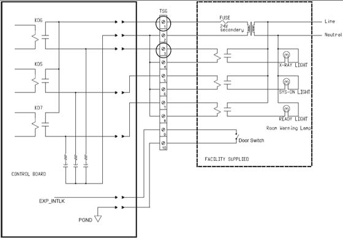

Illustration 5: Typical TS6 Warning Light & Door Interlock Connections

It is recommended that you use the four (4) wire method of adding an x-ray warning light to a room, as shown in Illustration 5. When using this method, you:
Minimize EMC interference.
Increase contact life of the relay used in the PDU.